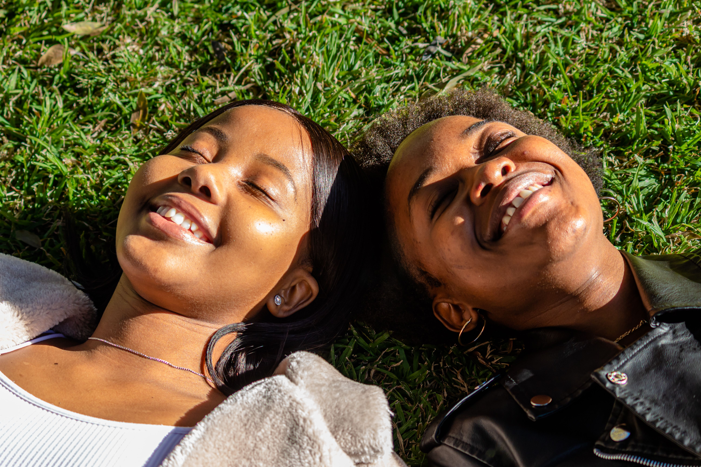

Je kind groeit op in een wereld vol Likes, video's en online contacten.
Hoe begeleid je je kind zonder het gevoel te geven dat je alles wilt controleren?

“Bescherm hun mentale gezondheid. Geef hun jeugd terug. En zorg ervoor dat technologie de toekomst
van onze jongeren ondersteunt, in plaats van bepaalt.”
5 tips voor ouders
1. Praat regelmatig met je kind over de gevaren van het internet
2. Maak samen afspraken over schermtijd en telefoon gebruik
3. Leer je kind hoe je online pesten en nep nieuws kan herkennen